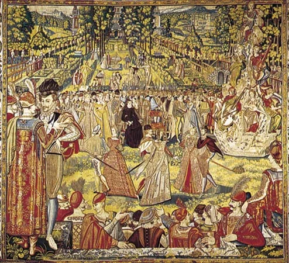
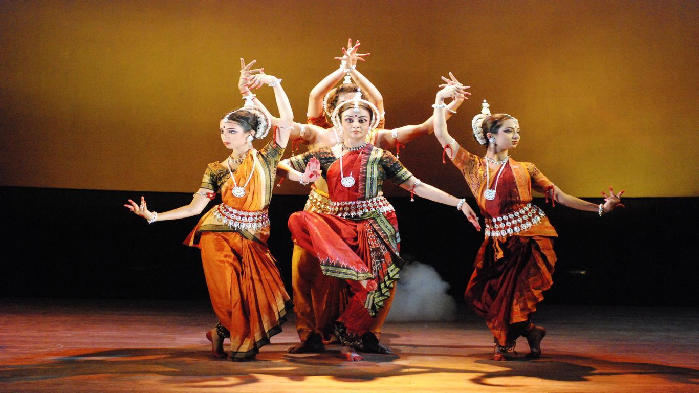
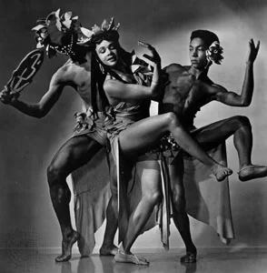

What Is Dancing?
Dancing involves moving the body rhythmically, often in a choreographed way and usually to music. Dance can express aesthetic ideas and emotions as a form of performance art presented to an audience. People also dance in nonperformance situations to release energy, express emotion, connect with other people, or just enjoy the feeling of movement.
While the art of dance varies across history and cultures, it exists in all cultures. In many cultures, both highly trained professionals and amateurs of all ages dance.
A Brief History of Dance
Origins in antiquity: The earliest historical records showing the origins of dance are cave paintings in India dating to about 8000 BCE Egyptian tomb paintings also depict dance in about 3300 BCE These early dances may have been religious in nature, and by the era of ancient Greece,
people were incorporating dance into celebrations of the wine god Dionysus (and later the Roman god Bacchus) and into ritual dances at the ancient Greek Olympic Games. In addition, early people danced for enjoyment, seduction, and entertainment.Paintings made in caves more than 10,000 years ago suggest
that even the earliest peoples danced. The first written records of dance date back some 4,000 years to the ancient Egyptians. Dance was a crucial element in festivals for their gods.
India and China: Dance throughout Asia has a rich history. While Hindu dancing in India has a rich performance history going back millennia, in the late 1700s, dance was restricted by British colonists, who considered the dances immoral.
Once India gained its freedom from Great Britain, the country revived its classical dance traditions. Chinese dance dates back at least 3,000 years, with ceremonial dances and folk dances adapted for performance at court. To this day,
celebrations still include traditional dances such as the dragon dance and lion dance.

Indian dance: Dances performed in India are said to have their origins in dances and rituals of the period of the Vedas, which date back to around 1000 B.C. The earliest Indian religious texts describe creation in terms of dance. In Hindu mythology, a dance by Shiva creates and destroys the universe.
All the three Indian religions, Hinduism, Buddhism and Jainism, share the same theoretical basis for dance and the visual arts. And so most of the margi or “classical” dance techniques, in spite of their local stylistic variations, bear strong similarities in all of these three traditions.
INDIAN DANCE
European social dances: Social dancing in most parts of the world grew out of folk dances, many of which were simple and repetitive. In Europe, the folk dances of the Middle Ages turned into formal ballroom dancing. These dances moved into royal courts beginning in the Renaissance, becoming popular as dancing masters taught upper classes the proper steps for court dances. As women's clothing allowed more freedom of movement in the nineteenth century, social dancing became more lively. The waltz, in particular, swept around the world as a major dance craze in the mid-nineteenth century, and social dances began to focus on two-person dancing in the early twentieth century.

Western Dance: Where did country western dance originate?
The primary influence of what we now call country (or "country/western") dance comes from Europe. Settlers from England, Scotland, and Ireland brought forms of dance from the countryside festivals (still performed as "contradance") as well as more courtly dances such as the pavane.
Modern western dance is part of this global language and its roots run wide and deep. They can be traced to the taverns of Ireland and to the ballrooms of Europe, to the Czarist palaces of Russia and further back still to the fluid tribal rituals of Africa